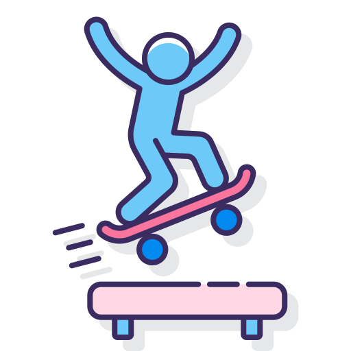

En este blog hablare, un mis experiencias como principiante del Skateboarding y como es mi
avance en este camino fascinante, aprenderás junto conmigo todos los trucos y secretos que
tiene este fantastico deporte, su historia y te daré algunos tips para que te animes como
yo, a empezar a patinar. Sabrás que pasos debes seguir para ser muy bueno patinando y
realizando trucos. Te dare algunos consejos para selecccionar tu primer skate o saber que
elegir en cada situación.
Después de leer y ver este blog te animarás a desarrolar este grandioso hobbie y hasta
quizás podras convertirte en todo un profesional del skateboarding.
Quizás después de leer este blog encuentres tu nueva afición favorita. Harás nuevos amigos y
te unirás a una comunidad llena de diversión.
El skateboarding no se trata solamente de ser un pro haciendo trucos o sabiendo más que los
demás, este deporte es para pasarlo bien, hacer un poco de ejercicio y tener diversión con
los amigos.
Desarrollo
Bienvenigo a SKATEBLOG, el blog que te dará horas de entretenimiento con retos o desafíos que
pondran a prueba tu paciencia y emociones, al intentar una y otravez los trucos, pero espera
no te desanimes, es parte del proceso, obviamente no todos los skaters sabemos hacer todos
los trucos y nadie nació sabiendo como andar en patineta por lo que no tienes nada por lo
que preocuparte, es parte del proceso de aprendizaje y aplica para TODO enserio... TODO.
Cómo aprendes a caminar, o a nadar o a tocar una guitarra; todo es practica y mucha
paciencia. Toma este desafío como un aprendizaje para el resto de tu vida.
La paciencia es lo más importante así como la perseverancia, todo lo que se desea se puede
conseguir con tiempo y esfuerzo.
Acompañame y aprendamos juntos un poquito más sobre el Skating, que dices ¿quieres andar ya?
Motivación
Hace 5 años me regalaron mi primera patineta, desde entonces he investigado y aprendido por
mi propia cuenta cómo se patina, realmente es algo sencillo si pierdes el miedo a el
movimiento. Más que nada se me hace genial el hecho de que una tabla con 4 ruedas te sirvan
de transporte y además ecológico.
El saber que con una patineta se pueden realizar acrobacias increibles y fascinantes para el
ojo humano es algo que me tiene impactado.
Bien esta ha sido toda la introducción pero antes de todo
es necesario decir que este deporte tiene seguro... seguro te rompes la... na no se crean
pero si es muy seguro que te caigas muuuchas veces así que ya sabes tienes que estar
preparado para uno que otro rasponsito. Insisto no hay que asustarse por muy feo que suene
el que te puedes caer; igual para eso existen las debidas protecciones, como rodilleras
coderas y casco sabías que hasta los más profesionales y experimentados las usan; así que no
te sientas avergonzado por usarlas y empieza ya a patinar.
Imagen ilustrativa de la introducción
 Top 10
Skaters más famosos de Internet
15/10/21
Esto son algunos de los "influencers" más reconocidos de internet y redes sociales.
La mayor parte de ellos de Instagram y de Youtube.
Lo mejor de Tony Hawk el skater más importante de la
historia
Previsualización de cada página (da click en
cada una para su
previsualización) o apretando ctrl y click en cada link abre en una nueva pestaña.
Thrasher Magazine
Aprendamos
12/12/2021
Para empezar a conocer un poco sobre el patinaje hay que saber como andar
Autor: Braille Skateboarding Año:2017
Este video nos enseña cómo aprender a patinar de la manera más sencilla
Investigación
22/12/2021
La Historia del Skateboarding
El skateboarding ha tenio grandes cambios a lo largo de la historia hasta llegar a lo que es
hoy y convertirse en hasta unjuego olímpico.
Esta historia se remonta a los años 50 en California, realmente no se sabe quien es el
creador de este deporte pero si se sabe que se creo como un metodo de llevar el surf a las
calles. El primer “skate” construído constaba de una simple tabla de madera, a la que
acoplaron ejes y ruedas de patines.
En aquellos años las patinetas no eran nada parecido a lo que hoy tenemos, aún existen
algunos ejemplares de los 50, y existen algunos modelos muy parecidos a los de aquel
entonces.
Aunque parezca que lo que hoy conocemos como patineta es "una simple tabla de madera con
ruedas" en aquella epoca era toda una novedad, solo necesitaban impulsarse un poco en las
calles cuesta abajo y surfear en el pavimento.
El skate no tardo en ser uno de los deportes más famosos de California, y que todos los
surfistas debían practicar, además esta novedad fue rápidamente propagada por la revista
Surf's Up que mostraba el skateboarding como algo nuevo y divertido para todos los
jovenes de la epoca.
Pero las cosas buenas no duraron demasiado, alrededor de 1966 esta moda del skate fue cuesta
abajo y parecía que iba a quedarse como algo residual y no iría más allá.
Hubo años en los que incluso se utilizaron ruedas de tierra compactadas , que eran
extremadamente difíciles de manejar y, por lo tanto, representaban un peligro real.
Estas ruedas de patineta, basadas en construcción en la que te proporcionaban mayor
velocidad, por lo tanto, mayor tracción en el suelo y estabilidad, esto hizo que muchas
personas interesadas en andar en patineta volvieran a practicarlo con regularidad.
Dos años más tarde, en el el año 75, los Z-Boys un equipo de skaters formado por nada más
y nada menos que unos jovencísimos Jay Adams, Tony Alva, Stacy Peralta, etc … se
dirigieron a un campeonato de slalom y freestyle en Del Mar.
El equipo de Zephyr presentó una asombrosa forma de patinar nunca antes vista y le mostró al
mundo en qué podría convertirse el skateboarding , es decir, hoy en día se les considera los
padres del skateboarding.
Fue entonces que en nuestro país, un grupo de amantes de la aventura decidió enfrentar las
incongruencias de la sociedad que vivía de esta manera andar en patineta.
Lo que empezó como un deporte para adolescentes en California, ha llegado al País Vasco,
Madrid, Barcelona y alrededores... El skateboarding llega a España de la mano de Sancheski,
la primera marca en la historia del andar en patineta
Los primeros skates eran una simple madera con 4
ruedas.
Los diferentes skates
Desde su surgimiento comercial en California en la década de 1970 y como una alternativa al
surf, el skateboarding ha tenido diversas modificaciones y su ruta en curso ha atraído a
personas de todas las nacionalidades.
Así que la calle puede ser la mejor pista y el parque el mejor lugar de entrenamiento.
Ya sea que se practique profesionalmente o recreativamente, es uno de los deportes extremos,
si no el más cercano, más cercano a las personas.
Algunos de ellos son mucho más fáciles de ver para encontrar, y algunos son un poco menos
comunes y más nuevos.
Skateboard
Es de las más comunes y más conocido, esta no es la más rápida a diferencia de otros
modelos, pero si es la más indicada para hacer trucos, y practicar en bowls y rampas,
mayormente todos los modelos estan corformados por los mismos componentes, tiene cambios en
la forma de la tabla y en las ruedas.
En opinion personal es perfecta para suelos verdaderamente lisos como los de los skateparks
que es donde recomiendo más practicar aunque para el día a día no es una muy mala opción,
pero no es tan comoda para asfalto, y menos en las calles, ya que (en México) no hay muy
buen mantenimiento de ellas. Y por esto mismo, es más dificil andar por ai con este modelo.
El precio de esta patineta suele variar, porque si compras un modelo preensamblado suele
tener un costo mayor o menor dependiendo de la marca y también si es exportada, como la
marca Santa Cruz que es una de las más cotizadas y de mejores materiales del
mecado. Además hay otra opción y esta es armarla tu mismo en skateshops dedicadas, en
experiencia personal si no puedes adquirir o no cuentas con un presupuesto muy alto no te
recomiendo armar tu mismo la patineta, esta puede salir de $2000 (100$ dolares) para arriba.
Para empezar si esta es la opción que más te gusta te recomiendo comprar una preensamblada,
estas tienen un costo de entre $1,200 (60$ dls) en adelante.
Recuerda que el skate no hace a el skater. Lo unico que podemos destacar de los modelos que
tu mismo ensamblas es la calidad de los materiales; pero no te preocupes por eso los modelos
que ya vienen armados no tienen casi nada de diferencia en la calidad de estos.
Patineta común
Longboard
Este modelo es genial si lo tuyo es andar por las calles, sin tener que preocuparte de lo
bien o mal que se encuentren estas, sus ruedas suaves te permiten librarte de las molestas
piedras, que a diferencia de el primer modelo, en vez de trabar la rueda y que salgas
volando, estas simplemente las avientas o pasan sin problemas, Además por lo grandes que son
estas, te permiten tener una mayor estabilidad, normalmente este modelo se usa solamente
para surfear por las calles y andar sin problemas.
Quizás la unica desventaja que tienen estas es el espacio, ya que si no cuentas con mucho en
casa no te convenga este modelo, pero no te preocupes tampoco son enormes y si aún así no te
convecen, hay otros modelos muy parecidos, que no ocupan tanto espacio en casa.
Longboard
Cruiser
Por ultimo esta el cruiser, este modelo tiene muchisismas versiones, como antes he dicho
este modelo es practicamenete un "long" pero más chico, sus ruedas son un poco más duras y
pequeñas, pero aún así tienen una velocidad así como el long board, impresionantes, estos
son los modelos más rápidos tradicionales del mercado y digo tradicionales, porque
hay variantes electricas que tienen velocidades más altas pero aquí no vamos a hablar de
ellas (aunque si no quieres hacer el mínimos esfuerzo, puedes comprar un modelo así).
Y retomando lo de las versiones, aqui te explico algunas de ellas,
Modelo
Descripción
Imagen
Cuiser tradicional
El cruiser tradicional es muy parecido al skate tradicional tiene distintas medidas
y trucks así como ruedas más blandas y el nose termina en forma
puntiaguda redondeada con un tail poco pronunciado o sin tail.
El penny realmentre es una marca pero este modelo es más conocido así por la
gran repercusión que ha tenido, en cuanto al modelo del cruiser, esta
versión es más pequeña que un cruiser tradicional y por tanto más ligera, tiene
distintas medidas que puedes checar en la página dando click en Penny además
existe una versión menos costosa y esto es debido a que estas al ser una marca
originalmente de Australia por la importación y remesas aumentan su costo, pero si
quieres un modelo así y de la misma calidad puedes optar por la marca Blazer que puedes
encontrar en tu skateshop local.
En opinión personal es perfecta si solo quieres andar por la calle y te gusta ir a
grandes velocidades, este modelo es con el que yo empezé y sinceramente estoy muy
contento.
Cruiser modificado
Por último pero no menos importante, el cruiser modificado, esta versión tiene
variantes dentro de si y es que cómo pueden ver el la página de penny boards, (que
pueden visitar dando click en el link de la anterior sección de esta tabla) hay
cruisers como el penny que son de plástico pero en medidas como la original.
Pero este modelo del que yo voy a hablar es totalmente distinto y es que es
literalmente un skate tradicional como el que ya hemos visto, pero con las ruedas de
un cruiser y este modelo es en mi opinión el más efectivo ya que tenemos la
velocidad y comodidad de un longboard o penny pero con la estabilidad de una skate,
que además podemos usar para hacer uno que otro ollie para esquivar obstaculos de la
calle. Esta versión es realmente versatil y super útil.

 Sitios
para aprender más
Sitios
para aprender más
 Aprendamos
Aprendamos
 Investigación
Investigación


:no_upscale()/cdn.vox-cdn.com/uploads/chorus_image/image/67369155/Skateboard_.0.jpg)
 MEME
MEME